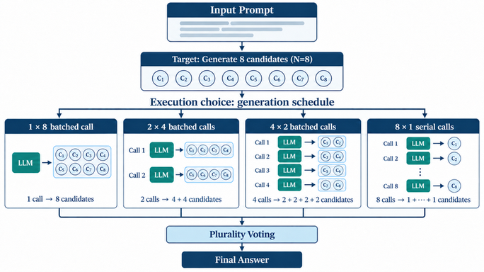

Test-time scaling budgets are quoted as N, the number of candidates, but N says nothing about execution: eight candidates can come from one batched call or eight serial ones. Holding N fixed at 8, eight serial single-candidate calls burn 4.64 to 4.86 times the gross GPU-device energy with 5.77 to 6.12 times the P95 latency of one batched call on A100s. N counts candidates, not cost; the schedule is the cost.
One batched generation call with eight candidates and eight sequential single-candidate calls produce the identical candidate budget through radically different execution, yet the literature reports only N. The paper's generation-schedule diagram makes the four tested schedules, 1x8, 2x4, 4x2 and 8x1, visually explicit.
Raising N from 1 to 8 on 500 GSM8K prompts improves accuracy 8.4 points for Phi-3-mini and 18.4 for Qwen2.5-1.5B, confirming the motive for scaling, while saying nothing about its systems price.
The fixed-N sweep table prices each schedule: Phi-3 mean latency climbs 7.54 to 14.03 to 25.22 to 44.98 seconds across the four schedules with P95 reaching 66.83, Qwen mirrors it, and the energy and latency ratios replicate across three independently scheduled A100 nodes.
Report the schedule alongside N, and batch candidates by default. The serial tax is pure overhead: identical candidates, identical accuracy, five times the energy.

Source table · Fixed-N=8 candidate-generation strategy sweep on A100-SXM4 80GB GPUs. Values are (8 rows)
| Model | Strategy | Calls/q | Cand./call | Mean s | P95 s | Tok/s | J/q | J/token | GPU-h/1k |
|---|---|---|---|---|---|---|---|---|---|
| Phi-3 | 1 call x 8 | 1 | 8 | 7.54 | 11.58 | 258.7 | 1355 | ||
| Phi-3 | 2 calls x 4 | 2 | 4 | 14.03 | 21.00 | 139.5 | 2210 | ||
| Phi-3 | 4 calls x 2 | 4 | 2 | 25.22 | 37.13 | 77.0 | 3670 | ||
| Phi-3 | 8 calls x 1 | 8 | 1 | 44.98 | 66.83 | 43.3 | 6286 | ||
| Qwen | 1 call x 8 | 1 | 8 | 7.66 | 10.53 | 277.5 | 936 | ||
| Qwen | 2 calls x 4 | 2 | 4 | 13.92 | 20.78 | 152.6 | 1558 | ||
| Qwen | 4 calls x 2 | 4 | 2 | 24.85 | 37.59 | 85.7 | 2683 | ||
| Qwen | 8 calls x 1 | 8 | 1 | 42.33 | 64.44 | 49.8 | 4547 |
Abstract
Test-time scaling can improve large language model reasoning by generating and combining multiple candidate responses. In sampling-based methods, the inference budget is often described by the number of generated candidates, N. However, N tells us how many candidates are generated, not how they are executed. The same candidate budget can be produced in one batched generation call or split across several sequential calls with smaller batch sizes. We first study the effect of increasing N on reasoning accuracy using Phi-3-mini and Qwen2.5-1.5B on 500 GSM8K prompts. As expected, increasing N from 1 to 8 improves accuracy by 8.4 percentage points for Phi-3-mini and 18.4 points for Qwen2.5-1.5B. However, accuracy alone does not show the systems cost of using a larger candidate budget. We therefore fix N = 8 and compare four generation schedules: 1x8, 2x4, 4x2, and 8x1, where axb denotes a generation calls with b candidates per call. We measure latency, throughput, GPU-hours, and gross GPU-device energy while keeping the total candidate count fixed. On A100 GPUs, eight serial calls use 4.64-4.86x as much gross GPU-device energy and have 5.77-6.12x the P95 latency of one batched call with eight candidates. The same pattern appears across three independently scheduled A100 nodes per model and in short-output SciQ/V100 experiments. These results show that candidate count alone is not enough to describe the systems cost of multi-candidate test-time scaling. When candidates are independent and memory allows it, fewer generation calls with larger batch sizes are more efficient. Evaluations should therefore report not only candidate count and accuracy, but also generation schedule and GPU-level systems metrics.